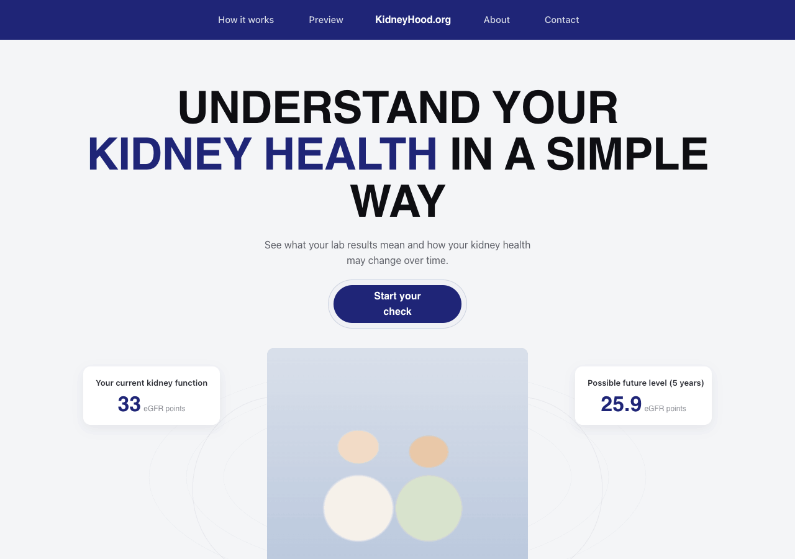

01 · Landing
Landing Page
Public marketing page. Establishes trust, explains the three‑step flow, previews the chart outcome, and drives to the Lab Form.

Sections (top → bottom)
- Nav — KidneyHood.org centered; How it works · Preview · About · Contact.
- Hero — H1 + lede + primary CTA "Check my kidney health".
- How it works — 3 numbered steps (Enter values → Review results → Take action).
- Navy band — reassurance + chart preview in white card.
- Future chart — static 4‑scenario preview (matches Results).
- Final CTA — repeat primary action.
Dev notes
- Nav collapses to burger at
<900px. - Primary CTA targets
Lab Form.html. - Chart is inline SVG — no library needed.
- All copy lives in the markup; no CMS wired.